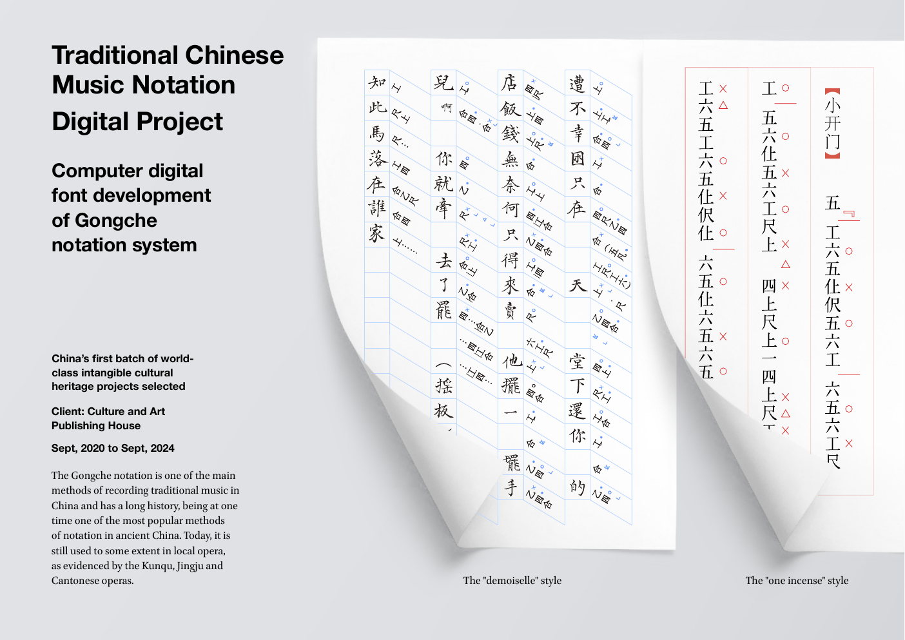
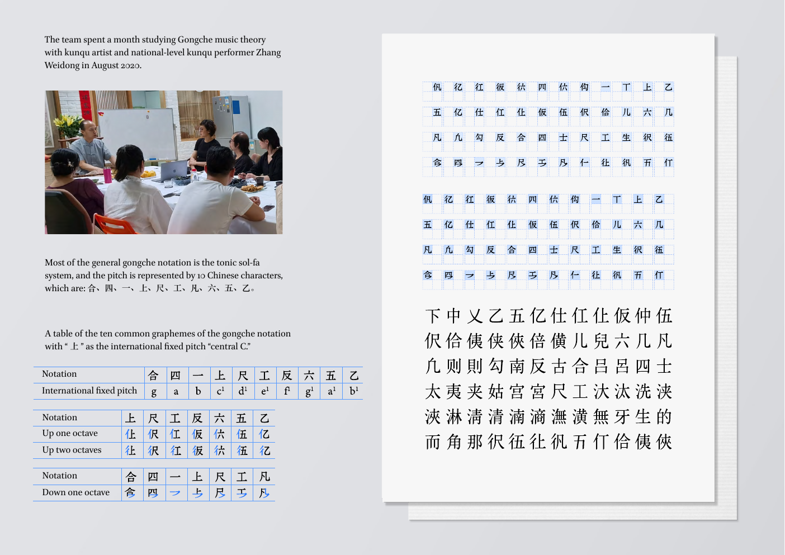
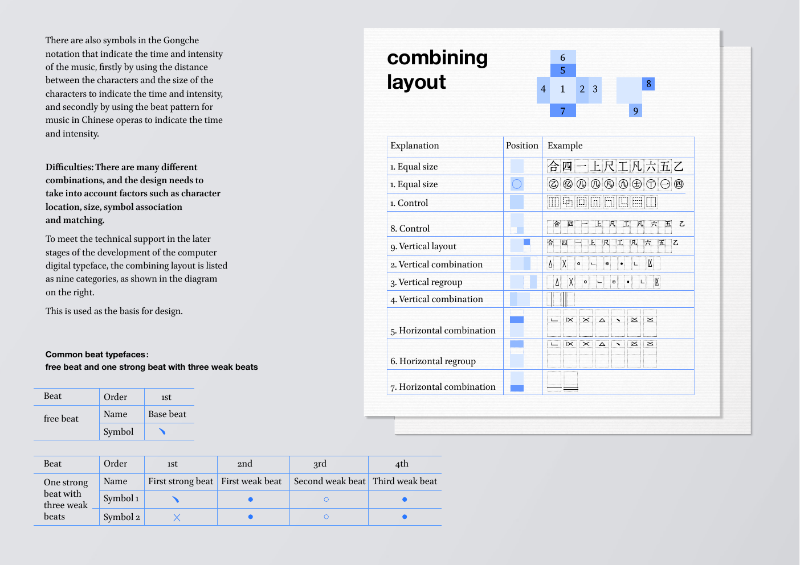
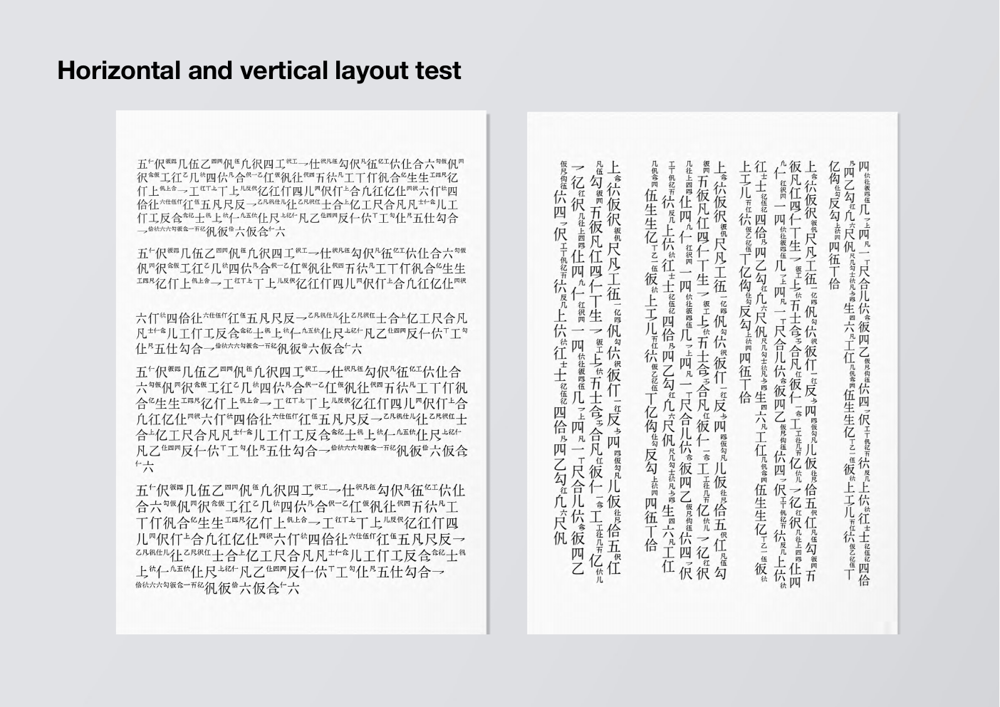

Notation System Research记谱系统研究
Traditional Chinese Music Notation Digital Project工尺谱数字化项目
Computer digital font development of the Gongche notation system.工尺谱记谱系统的计算机数字字体开发。





Notation System Research记谱系统研究
Computer digital font development of the Gongche notation system.工尺谱记谱系统的计算机数字字体开发。



